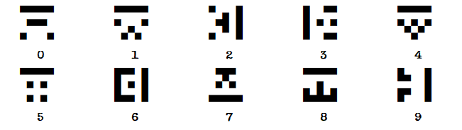

À propos de D-CODER
TRANSMISSION EN COURS...
Ce module consiste en trois hiéroglyphes extraterrestres.
Chaque hiéroglyphe correspond à un chiffre, comme indiqué dans le tableau ci-dessous.
Presser chaque hiéroglyphe lorsque le dernier chiffre du compte à rebours de la bombe correspond au chiffre associé audit hiéroglyphe.
Presser un hiéroglyphe à un moment incorrect résultera en l’enregistrement d’une erreur, mais ne réinitialisera pas le module.
